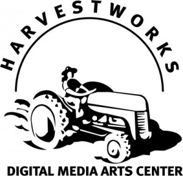
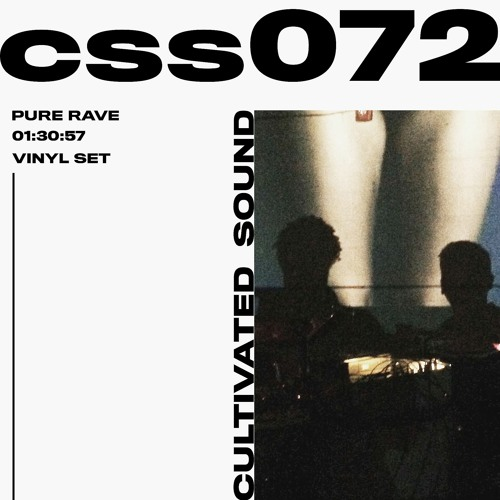

Wayne State University ('18 - '19): Web developer
-
Developed and mainted 15 customized case based learning lab apps.
-
remodeled, debugged and networked all hosted applications on WSU med-tech and med-core servers.
-
Wrote documentation detailing basic processes of the web development cycle.
Grand Circus ('15 - '19): Instructor
-
Instructed students in developing dynamic web applications utilizing a variety of programming languages including Java, C#, and JavaScript, HTML, and CSS.
-
Instructed students in deploying web applications utilizing web tools including Git, Spring, Tomcat, JDBC, MySQL and AWS.
-
Developed and wrote curriculum in core concepts of Object Oriented Programming in the form of lecture material and coding excercises.
-
Implemented a montly series of coding seminars for prospective students and corporate training.
Bryan C. Dulaney ('15 - ): Freelance Web Developer
-
Full-stack development utilzing Wordpress, PHP, JavaScript, HTML and CSS.
-
Custom design and UI layout utlizing HTML5, CSS, and Adobe Creative Suite tools Photoshop, Illustrator, and InDesign.
-
System Administration on the MAMP/LAMP stack.
-
Individualized client consulatation and project management services.
Wayne State University - Detroit ('18 - )
-
Current junior in the College of Engineering: Computer Science Department.
-
Program focus on problem solving with algorithms.
University of Michigan - Ann Arbor ('03 - '08
-
Bachelor of Art in Music: program focus in Musicology.
-
Minor in Performing Art Technology.
Programming Languages
- Java
- JavaScript
- PHP
- C++
- C#
Development
- MySQL
- API integration
- MAMP/LAMP stack
- Linux
- FTP
- Git
- G Suite
Design
- Adobe Creative Suite
- JQuery
- React
- HTML5
- Modular CSS
Audio Engineering
- Logic Pro X
- Sound Recording
- Sound Editing
- Mixing/Mastering

- Recipient of the 2019 Harvest Works Residency Program.

-
90 minute audio mix and interview feature with Cultivated Sound, published 2/6/2021.